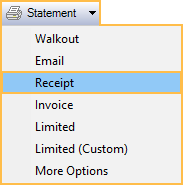
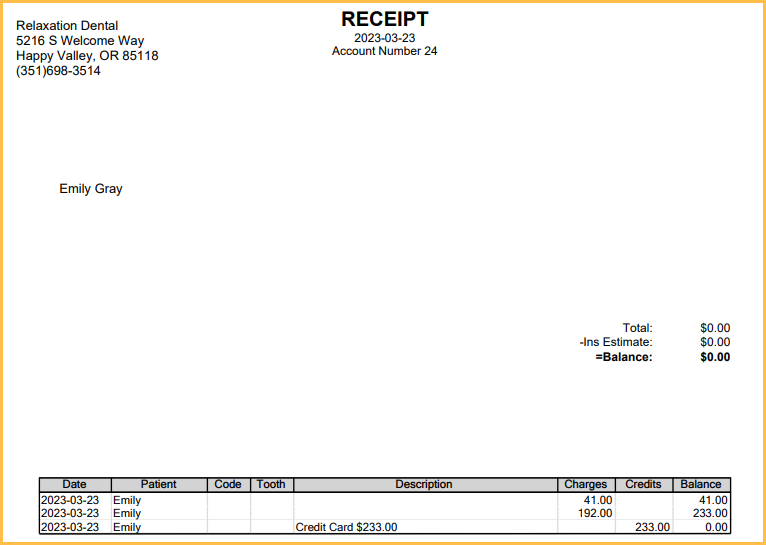

Canada Receipts
For Canada users, in the Account Module, click the Statement dropdown, Receipt.
The main purpose of printing receipts for patients is for income tax purposes. Receipts print the same as for other countries and include procedures, but without procedure descriptions, procedure codes, or tooth numbers.
Receipts do not include:
- statements
- claims
- claim payments
Optionally:
- A note can be added to the bottom of receipts that reads: KEEP THIS RECEIPT FOR INCOME TAX PURPOSES. To display this, add the Output Text Field StatementIsTaxReceipt to the Statement Layout.
- To print this receipt in a date range, select the Statement dropdown, More Options. Enter a date range and check Receipt.
Example of a receipt:

Note: If this receipt does not work for the practice, consider running and printing Query #1852 instead.